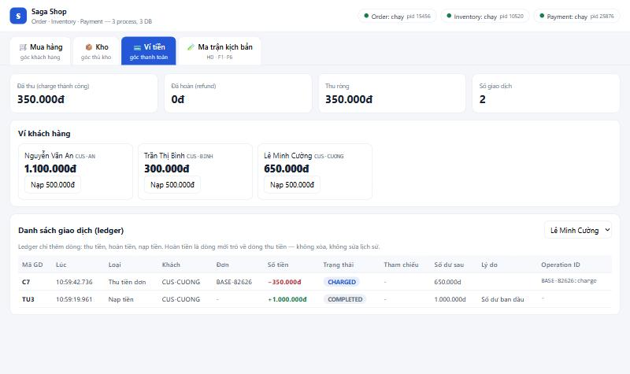
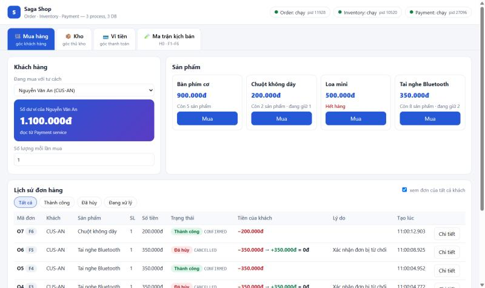
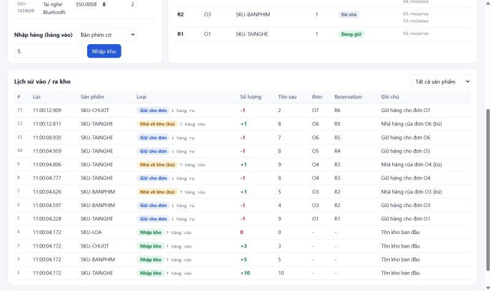
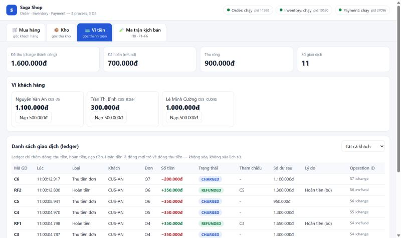
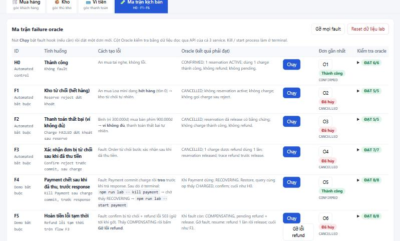
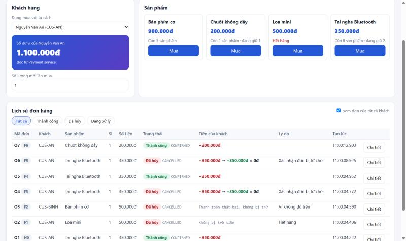
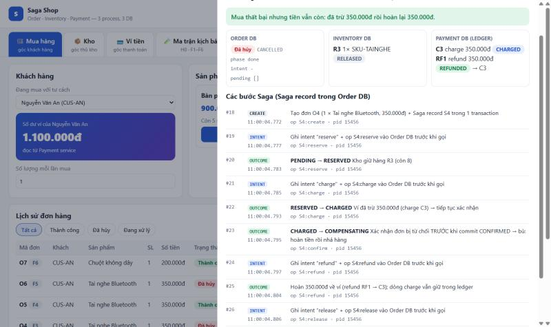
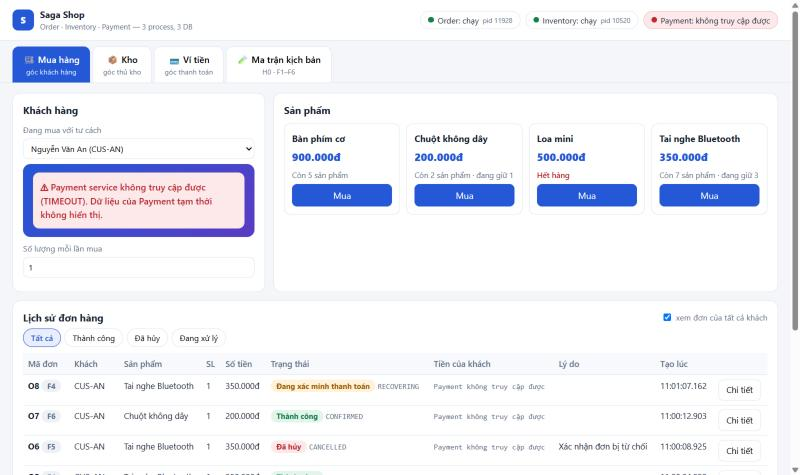
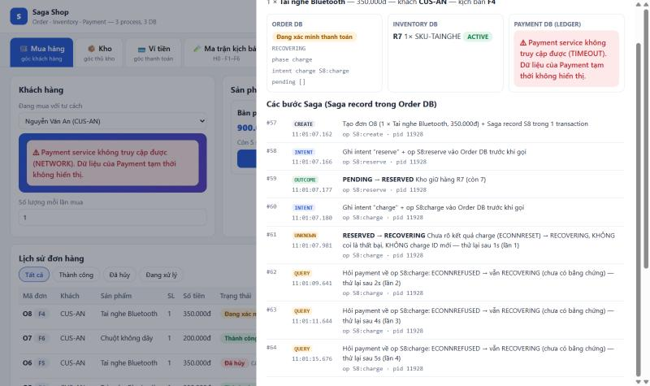
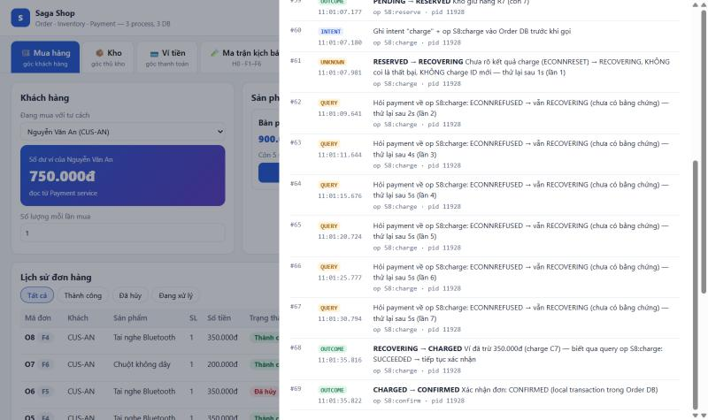

Order · Inventory · Payment (ví tiền) — 3 process, 3 database riêng, orchestrator có Saga record bền vững, bù khi lỗi, tự phục hồi khi process bị kill.
Theo đúng yêu cầu của bài: vấn đề → thiết kế → demo → bằng chứng → đánh đổi
Checkout đi qua 3 DB. ROLLBACK một DB không gỡ được tiền đã thu ở DB khác.
Vì sao Saga thay vì 2PC. Kiến trúc, state machine, intent → call → outcome, operation ID.
App thật với 3 góc nhìn: khách, kho, ví. H0, F1–F6, trong đó có kill Payment và kill orchestrator.
28 test, oracle 7/7, snapshot 3 kho, marker, PID trước/sau restart.
Mất isolation, bù có độ trễ, một orchestrator, chưa có outbox.
Baseline cố ý sai: reserve(); charge(); confirm(); — không prepare, không vote, không bù. Chạy bằng npm run baseline
$ npm run baseline Baseline checkout cho đơn BASE-82626 — CUS-CUONG, số dư 1.000.000đ 1. reserve → 201: R7 ACTIVE (Inventory DB ĐÃ COMMIT) 2. charge → 201: C7 CHARGED (Payment DB ĐÃ COMMIT) 3. confirm → LỖI: Order "rollback" đơn của mình… và dừng. KẾT QUẢ SAU "ROLLBACK": Order DB : không có đơn (đã rollback) Inventory DB : R7 ACTIVE ← orphan reservation Payment DB : C7 CHARGED, 1.000.000đ → 650.000đ ← orphan charge => ROLLBACK của Order DB không chạm được tới DB của Inventory và Payment.

Local ACID chỉ bảo vệ trong một DB. Mỗi service sở hữu DB riêng và chỉ nói chuyện qua HTTP, nên không có transaction nào bao được cả ba.
Câu hỏi: làm sao để 3 DB cùng "thành công" hoặc cùng "không mất gì"?
Orchestration (một orchestrator trong Order ra quyết định + Saga record) thay vì choreography: dễ quan sát và test từng nhánh lỗi; lab chưa cần broker.
Chỉ bind 127.0.0.1. Không service nào đọc DB của service khác. UI đọc qua API.
Mỗi lựa chọn phục vụ một yêu cầu cụ thể của bài
| Hạng mục | Chọn | Vì sao |
|---|---|---|
| Ngôn ngữ | Node.js 22 + Express 5 | Nhóm đã dùng ở Block 5–6. fetch + AbortSignal.timeout có sẵn cho mọi lời gọi. |
| Database | SQLite, mỗi service 1 file WAL + synchronous=FULL | 3 DB độc lập thật. Commit là đã fsync, nên kill process không mất dữ liệu; "restart cùng DB" = chạy lại process. Không cần Docker. |
| Kiểu Saga | Orchestration trong Order | Saga record nằm cùng Order DB → đổi trạng thái đơn và saga trong 1 local transaction. |
| Chạy Saga | Nền (202) + recovery loop 1s | Khách không bị treo khi Payment chết. Lần chạy đầu và lần phục hồi dùng chung một đoạn code. |
| Operation ID | S5:charge suy từ saga, lưu trong intent | Retry hay restart luôn ra đúng ID cũ, không thể sinh C2. |
| Chống trùng | Bảng operations + UNIQUE | Hai lớp: code trả kết quả cũ; DB chặn bản trùng (one_refund_per_charge). |
| Điểm dừng | Freeze + marker + kill process thật | Dừng đúng sau commit / trước response. Marker kèm PID và op ID là evidence. |
| UI | HTML/JS thuần, process riêng | Kill Order (F6) thì UI vẫn sống và báo "Order không truy cập được". |
| Test | Jest gọi process thật ở cổng 400x | Chứng minh ranh giới 3 process / 3 DB; không đụng dữ liệu demo. |
Mỗi ô là một local commit trong DB của service sở hữu. Bù theo thứ tự ngược; quy định của lab: refund trước, release sau.
| Lỗi ở | Đã commit | Bù | Kết quả cho khách |
|---|---|---|---|
| F1 · Reserve bị từ chối (hết hàng) | không có gì | — → CANCELLED | Không bị trừ tiền |
| F2 · Charge FAILED (ví không đủ) | reservation | release → cancel | Không bị trừ, hàng về kho |
| F3 · Confirm bị từ chối | reservation + charge | refund → release → cancel | Trừ rồi hoàn lại đủ: tiền vẫn còn |
machine.js là hàm thuần apply(saga, event): không DB, không mạng → 16 unit test. Thiếu bằng chứng thì ném GuardError.
nextAction() suy việc tiếp theo chỉ từ trạng thái đã lưu trong DB, không từ RAM.
Process mất RAM khi chết; chỉ DB còn lại. Vì vậy ghi việc sắp làm + ID cố định xuống DB trước khi gọi ra ngoài.
(1) INTENT tx Order DB: intent = charge, op S5:charge (2) CALL POST /payments/charges {charge_op_id: S5:charge} → Payment: ví −350k + ledger C4 + operations (1 tx) (3) OUTCOME tx Order DB: CHARGED, charge_id=C4, xóa intent
| Chết ở | Order DB còn | Khi restart |
|---|---|---|
| sau (1) | intent S5:charge | gửi lại cùng op → thu lần đầu |
| giữa (2) | intent S5:charge | gửi lại cùng op → Payment trả kết quả cũ |
| sau (2), trước (3) — F6 | intent S5:charge | query / gửi lại → CHARGED → confirm |
opId(saga, step) → S5:reserve, S5:charge, S5:refund, S5:release. Suy từ saga nên không thể sinh ID mới.
Sai: chỉ lưu "RESERVED" rồi restart → không biết đã charge chưa → sinh C2 (thu 2 lần) hoặc hủy đơn khi tiền đã thu.
Orchestrator phân loại từng response; "không biết" thì giữ RECOVERING và hỏi lại bằng đúng op cũ
| Nhận được | Ý nghĩa | Hành động |
|---|---|---|
| 201 | Chắc chắn đã thu | CHARGED → confirm |
| 402 FAILED | Chắc chắn không thu | COMPENSATING [release] |
| timeout · ECONNRESET ECONNREFUSED · 5xx | Không biết | RECOVERING, giữ intent + op |
Không bao giờ coi timeout là thất bại rồi hủy đơn (khách mất tiền), và không bao giờ charge bằng ID mới (thu 2 lần).
Cấu hình: timeout gọi service 2s · recovery loop 1s · backoff 1/2/4/5s · resume khi Order khởi động + POST /sagas/:id/resume.
Đúng yêu cầu của thầy: khách mua hàng xem lịch sử và tiền của mình · thủ kho xem hàng vào/ra · ví xem giao dịch · ma trận kịch bản. Mở app ↗


Ledger chỉ thêm dòng: thu tiền, hoàn tiền (trỏ về dòng thu), nạp tiền. Ma trận tự kiểm oracle từ dữ liệu đọc qua API của cả 3 service.


F1, F2 xảy ra tự nhiên (loa hết hàng, ví Bình chỉ có 300k). F3 dùng fault hook confirm=reject.


charge.afterCommit=freeze → marker → npm run lab -- kill payment → RECOVERING → npm run lab -- start payment → CONFIRMED



Evidence (evidence/F4/timeline.txt, đơn O5): lúc Payment chết, snapshot đọc file DB: Order RECOVERING · R4 ACTIVE · C4 CHARGED op=S5:charge. Cuối: đúng 1 charge, oracle F4 8/8; hội tụ 0,7–4 giây sau khi start Payment.
Không báo CANCELLED khi tiền chưa hoàn. Gỡ lỗi → refund đúng 1 lần → release → cancel.
SNAPSHOT khi-refund-loi Order DB : COMPENSATING intent=refund S6:refund pending=[refund, release] Inventory DB: R5 ACTIVE (chưa release vì refund chưa xong) Payment DB : C5 charge 350000 CHARGED GỠ FAULT payment refund → hội tụ sau 1290ms SNAPSHOT cuoi Order DB : CANCELLED pending=[] Inventory DB: R5 RELEASED Payment DB : C5 CHARGED | RF2 refund REFUNDED →C5 ORACLE F5: ĐẠT 8/8
Kill Order → start lại cùng file DB → RESUME đọc intent → dùng lại op cũ.
MARKER order.charge.afterCall (pid 9144, op S7:charge, C6) KILL order pid=9144 SNAPSHOT sau-khi-dung Order DB (db-file): RESERVED phase=charge intent=charge S7:charge Payment DB: C6 charge 200000 CHARGED op=S7:charge START order pid=15456 (process mới, cùng file DB) Hội tụ sau 535ms, op trước restart S7:charge SNAPSHOT cuoi: CONFIRMED · R6 ACTIVE · C6 (1 charge) ORACLE F6: ĐẠT 9/9
Test chạy trên 3 process thật (cổng 400x). Evidence: evidence/test-output.txt, evidence/SUMMARY.md, evidence/<ID>/timeline.txt
test xanh · 4 suite · khoảng 15 giây
check oracle trên 7 kịch bản
| Suite | Số test | Nội dung |
|---|---|---|
| unit/machine | 16 | chuyển trạng thái, guard, unknown outcome |
| idempotency | 5 | gửi lại cùng op, khác payload → 409, refund 1 lần |
| saga.v1 | 4 | H0, F1, F2, F3: assert cả 3 kho + toàn ledger |
| recovery | 3 | F4, F5, F6 tự động, kill process thật |
| ID | Giữa chừng | Cuối | Ledger của đơn | Oracle | Hội tụ |
|---|---|---|---|---|---|
| H0 | - | CONFIRMED | C1 CHARGED | 6/6 | - |
| F1 | - | CANCELLED | trống | 5/5 | - |
| F2 | - | CANCELLED | C2 FAILED | 5/5 | - |
| F3 | - | CANCELLED | C3 CHARGED · RF1 → C3 | 7/7 | - |
| F4 | RECOVERING | CONFIRMED | C4 CHARGED (1 charge) | 8/8 | 0,7–4s |
| F5 | COMPENSATING | CANCELLED | C5 CHARGED · RF2 → C5 | 8/8 | 1,3s |
| F6 | RESERVED + intent | CONFIRMED | C6 CHARGED, op S7:charge | 9/9 | 0,5s |
Saga đổi atomicity tức thời lấy tính sẵn sàng; nhóm ghi rõ những gì chưa đảm bảo
Trong lúc saga chạy, người khác thấy hàng đang bị giữ. Nhóm dùng trạng thái "Đang xử lý" (semantic lock) để thể hiện.
Khách thấy tiền bị trừ trong khoảng từ lúc charge đến lúc refund. Refund không xóa được thông báo đã gửi hay phí giao dịch.
Chống chạy trùng bằng RAM. Nhiều instance cần lease + fencing cho từng saga.
Saga record bền không đảm bảo message hay tác động ngoài xảy ra đúng một lần. Đây là nội dung block sau.
Đủ cho 3 DB độc lập và bền; không chứng minh concurrency hay tải. Đổi sang PostgreSQL chỉ cần thay tầng DB, logic Saga giữ nguyên.
Ngoài phạm vi lab (chỉ có lỗi tạm thời F5); thực tế cần hàng chờ xử lý thủ công.
Em cảm ơn thầy đã lắng nghe. Nhóm em sẵn sàng nhận câu hỏi.